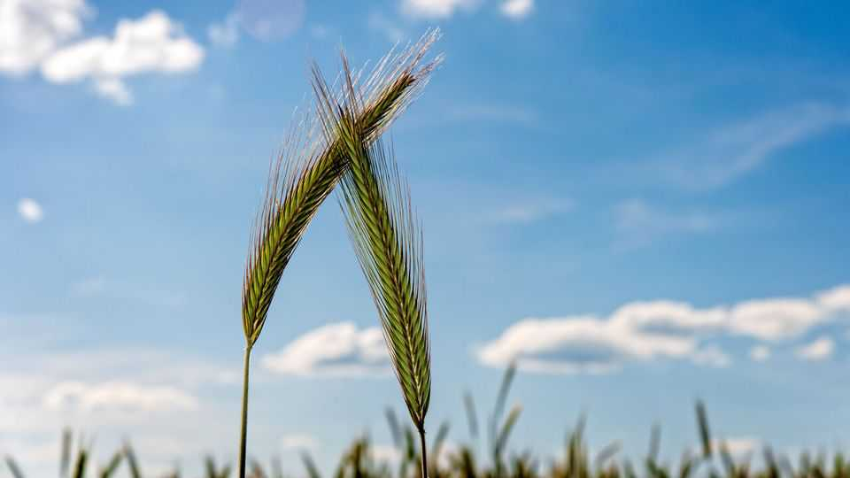

How plants keep tabs on the competition
They grow faster when their rivals are doing the same
June 18th 2026

Given their slow growth and sessile lives, the idea of plants battling one another may seem fanciful. Yet they do. They fight for access to water, nutrients and pollinators. Since one plant’s leaves are another’s shade, growing towards the sun can be a duel to the death. As in any conflict, espionage helps. A paper published in the Journal of Experimental Botany reveals how plants engage in it.
Botanists have known for years that plants can communicate with each other. One way is via chemicals known as volatile organic compounds (VOCs). When plants are attacked by pests, for instance, the composition of the VOCs they release changes. Previous work has shown that this drives nearby plants to raise their own defences in anticipation of being attacked in turn. What has gone unexplored is whether plants detect VOCs released by their neighbours when they are healthy. So Velemir Ninkovic, an ecologist at the Swedish University of Agricultural Sciences, decided to run an experiment.
With a team of colleagues, Dr Ninkovic planted three varieties of barley that grow at different rates—one quickly, one slowly and one at a middling pace. The plants were put in growing chambers next to one another, but with no way for them to shade their neighbours. The only connection that the plants had to one another was through one-way air vents that connected their growing containers. These allowed the researchers to blow air from one chamber to the next, and to monitor the effect that this had on the plants over 25 days.
The results were striking. The slow-growing barley grew more quickly when it was exposed to air from the chambers of its fast-growing cousins, producing 20% more biomass than when it was placed next to slower-growing plants. This, Dr Ninkovic surmises, is because the slow-growing plants were detecting the compounds released by their neighbours and realising that, in the wild at least, they would be at risk of getting shaded out if they did not get a shift on.
Fast-growing plants exposed to air from the chambers of their slow-growing cousins reacted in the opposite way. With less need to race for the sun, they cut their growth rates notably. (The plants with intermediate growth rates had no significant effects on their neighbours.) Dissection of these plants and genetic analysis of their tissues revealed more details about exactly what was going on. While the laggards were switching resources towards growth, the speedsters were able to spend more of theirs on metabolically expensive defensive measures, such as churning out chemicals that make their leaves unpalatable to herbivores.
Barley plants, in other words, can chemically eavesdrop on their competitors, and tweak their own growing strategies accordingly. Farmers are already experimenting with using VOCs to boost productivity. Dr Ninkovic’s results suggest they may be able to nudge crops to produce protective compounds if pests are expected to arrive, as well as inducing them to grow more quickly to boost yields when risks are low. ■
Curious about the world? To enjoy our mind-expanding science coverage, sign up to Simply Science, our weekly subscriber-only newsletter.